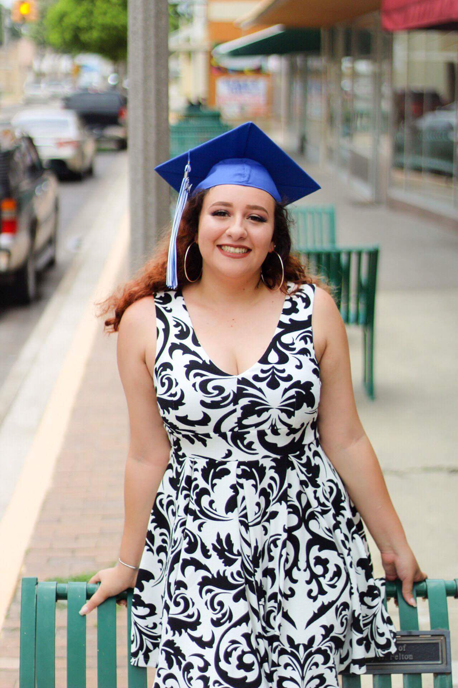

I am a 22 year old, small town artist. I'm from the border town of Del Rio, Texas. I graduated high school in 2017 and attened UTSA for Civil Engineering. I quickly learned college wasn't all it was cracked up to be, especially being away from home. I decided that engineering wasn't the career I wanted to persue anymore because of one key factor. I WANTED A CREATIVE CAREER. I wanted to work with like minded creatives and I loved to design things for people. I've always loved making art, so I knew that's what I had to do. I am in my first year of my Digital Media degree at NWVC in San Antonio, Texas. I hope to one day be a full time grapgic artist that works with product and merchandise design. I would love to design your albulm cover or the intro for your YouTube channel.
